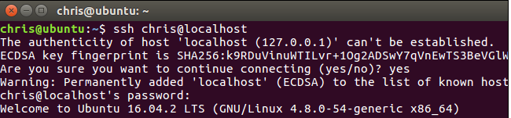
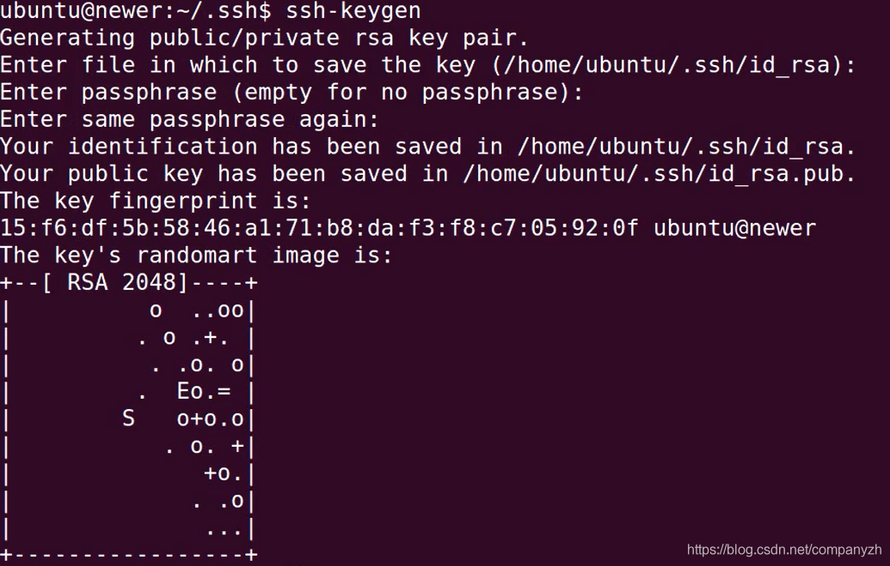
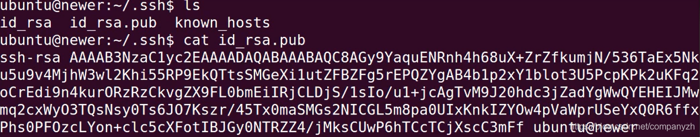
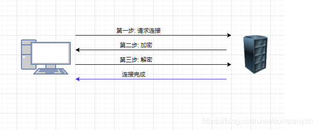
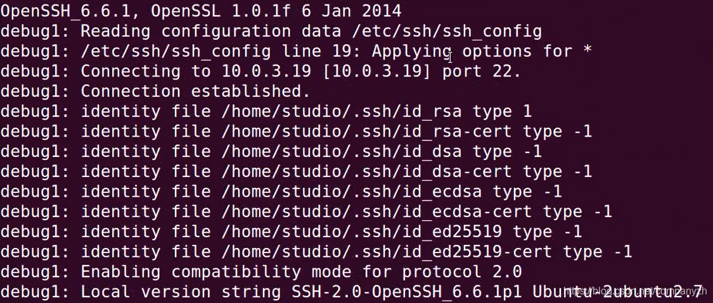
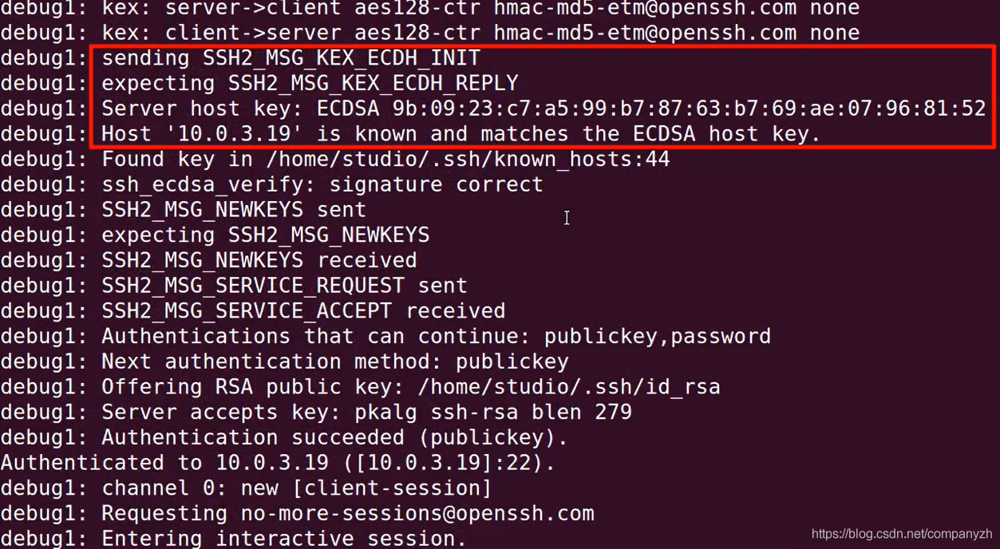
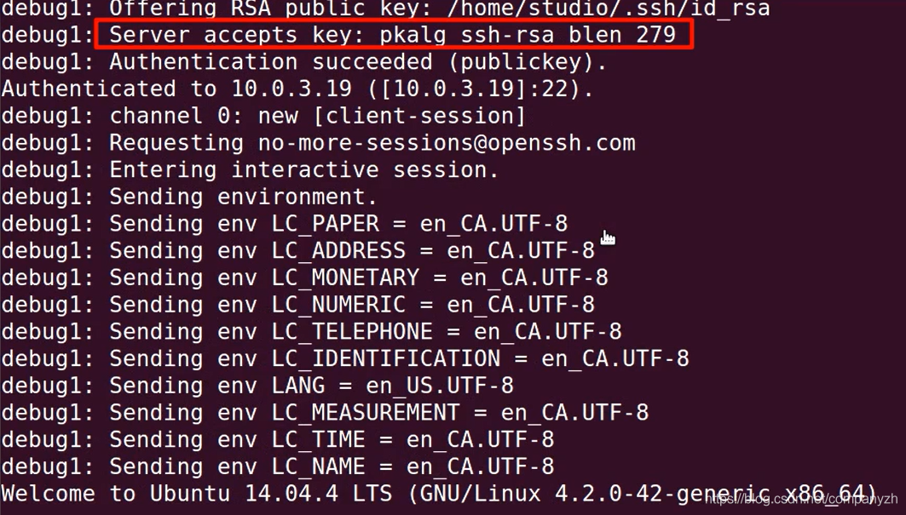
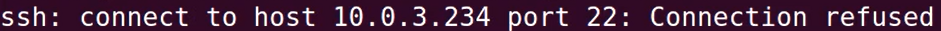
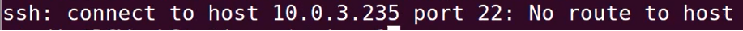

- 01 我应该站在谁的肩膀上 - OSI vs TCPIP模型.md.html
- 02 万丈高楼平地起- 物理层 + 数据链路层.md.html
- 03 OSI的灵魂就是我 - 网络层.md.html
- 04 要快还是要稳你说好了 - 传输层.md.html
- 05 是时候展现真正的技术了 - 应用层.md.html
- 06 重回小学课堂 - 二进制101.md.html
- 07 1+1 = 2吗？ - 二进制的计算.md.html
- 08 16进制又是个什么鬼？ - 16进制的讲解.md.html
- 09 我想有个家 - 什么是IP地址.md.html
- 10 我可是住二环的人 - IP地址的组成和分类.md.html
- 11 我已经没地方住了吗 - IPv6.md.html
- 12 向左还是向右 - IP路由.md.html
- 13 我能给你安全感 - TCP（一）.md.html
- 14 我那不为人知的秘密是什么 - TCP（二）.md.html
- 15 不问收没收到，就问快不快 - UDP.md.html
- 16 我为什么与众不同 - TCP高级篇（拥塞模型）.md.html
- 17 来，先看看我的家谱 - HTTP的身世.md.html
- 18 我都这么成功了，你却说我不行 - HTTP 的特点和缺点.md.html
- 19 我老了，让我儿子来吧 - HTTP2.md.html
- 20 稳重的大外甥 - HTTPS.md.html
- 21 HTTP的高级篇 - HTTPClient（Java）.md.html
- 22 想来我家，你自己查呀 - DNS.md.html
- 23 来的早，不如来得巧 - NAT.md.html
- 24 辛苦的邮政 - SMTP.md.html
- 25 你就是看不见我 - VPN.md.html
- 26 黑客的好帮手 - SSH.md.html
- 27 你可以得到我的心，却得不到我的人 - 物理安全设备.md.html
- 28 你怎么证明你就是你 - 身份验证和访问控制.md.html
- 29 我要怎么藏好我的考研资料 - 网络攻击（一）.md.html
- 30 我要怎么藏好我的考研资料 - 网络攻击（二）.md.html
- 31 如何保护我的考研资料 - 网络攻击防范.md.html
- 32 Linux网络安全 - 安全实战.md.html
- 33 结语.md.html
- 捐赠
26 黑客的好帮手 - SSH
通信协议
我们今天来谈论一下SSH，Secure Shell和Telnet，这是两种广泛使用且非常有用的基于UNIX和Linux的远程通信协议。
首先来看一下基本的概念，通信协议是一组公认的规则，用于建立同步方法和通信会话的各方将使用它们来管理其交换。广泛采用的协议允许硬件制造商设计能够与其他网络设备和软件开发人员进行可靠通信的产品，以满足他们的软件可能面临的连接需求。开放系统互连模型OSI是网络连接的通用且有用的概念，它将整个过程分为七个不同的层，这是我们最开始就讲过的。例如，如果我在访问Internet某个站点时将JPEG图像加载到浏览器中，则该图像实际上是由浏览器加载，并且使用户（在应用层上）可理解，即第7层。在表示层（第6层）上，图像已转换为浏览器的可读格式，在该层进行了诸如加密和媒体文件处理之类的数据转换。通过HTTP协议，在第5层（会话层）上管理我的计算机与远程Web服务器进行通信的正在进行的连接本身。 SSH和Telnet也在第5层上运行。虽然会话本身由第5层维护，但实际上并没有执行任何操作。你可以将其视为没有人说任何东西的电话。因此，将JPEG文件获取到我的计算机时，将需要使用TCP协议在传输层的会话之上进行数据传输。第三层，即网络层，是由诸如路由器或IPv4和ICMP协议之类的设备组成的基础结构，可实现地址分配，网络节点之间的路由以及对移动网络流量的控制。当我在浏览器的导航栏中键入网站URL时，将请求实际路由到Web服务器主机的过程是在第3层上完成的。一旦知道了数据包的目的地，则数据链接层将负责数据帧和数据包的实际传输。处理接收确认。这些帧的流在通过以太网或PPP等媒体传输时，可以在它们的目的地重组为单个资源，例如我耐心等待的JPEG。最后，数据传输本身以某种电，光或无线电信号的形式通过物理层上的网络介质（如电缆或Wi-Fi）进行传输。然后，每个数据包将以某种方式通过我的客户端计算机上的各个层进行定向或转换，但顺序相反。正如我前面说过，OSI模型是一种工具，用于可视化和阐明参与网络通信的每个组件的作用。当然这个不是本节课的重点。我们还是来把焦点放在SSH和Telnet上。
OpenSSH
Secure Shell程序是一种协议，可让你在任何基于UNIX的服务器上打开远程终端会话，在该服务器上，你可以根据登录帐户可用的权限执行命令。与其他远程连接工具（包括Telnet）相比，SSH的主要优势在于，你在此会话期间所做的所有操作都将被加密，因此，可能在你与远程主机之间的任何时间观看的任何人都只会看到不可读的文本。使用相同的基本过程，你还可以使用SCP在节点之间安全地传输文件，并且在服务器和客户端计算机上适当地编辑了配置文件后，也可以在远程主机上安全地启动GUI应用程序。

SSH使用起来可以说非常的简单实用，SSH可以在Windows 10计算机上本地使用。 SSH的验证方式有以下三种
- RSA rhost authentication。如果远程主机包含名为任一主机的文件，则RSA rhost身份验证起作用。如果这些文件中的任何一个包含标识客户端计算机及其当前用户的条目，并且主机服务器已经具有客户端主机密钥的兼容条目，则将允许登录。如果这些文件都不存在，并且很大程度上是由于Rhost系统本身内部的结构缺陷，那么默认情况下通常会出现这种情况，则客户端上运行的SSH程序将向服务器标识其想要的本地加密密钥对利用也就是第二种方式。
- /etc/hosts.equiv
- /etc/ssh/shosts.equiv
- /home/username/.rhosts
- /home/username/.shosts
- Private/pubic keypair authentication - 你首先需要一对密钥。如果还没有，则可以生成一个密钥对。使用ssh-keygen程序在Linux客户端上用户主目录中的ssh目录（.ssh）- 目录名称前面的点告诉Linux，这是一个隐藏文件，只能使用带-a标志的ls才能看到。ssh目录可以存在于任何单独的用户目录层次结构中，系统的etc目录下还有一个SSH目录，其中包含密钥对和两个配置文件。ssh*config文件确定该计算机在默认情况下将如何充当其他远程计算机上的客户端，而sshd*config文件将其行为作为远程客户端访问的主机的主机进行控制。
- SSH user keys location - /home/username/.ssh
- SSH system keys location - /etc/ssh
- SSH configuration files /etc/ssh/ssh*config 和 /etc/ssh/sshd*config
- Password authentication。如果前两个身份验证选项都不起作用，则服务器将提示客户端输入密码。出于安全原因，最好避免依赖密码。这对于SSH协议版本1和更现代的SSH协议版本2都是很常见的。此外，版本2还支持RSA，DSA和OpenPGP公钥算法
Private/Publlic Key 详解
如果你接受ssh-keygen的默认值，它将创建两个文件分别称为id*rsa和id*rsa.pub。第一个文件是该对文件中的私有文件，应谨慎对待，并且永远不要暴露于不安全的网络中，例如将其作为电子邮件附件发送。通常，你将私钥保留在计算机上。系统将提示你创建一个密码短语，每次尝试基于密钥的远程登录时，本地计算机都希望你输入该密码短语。我将创建一个密码短语

我将公共密钥打印到屏幕上。就是长这个样子的。

我将内容（仅内容）复制到剪贴板。登录到我要为其设置基于密钥的登录的计算机。转到.ssh目录，打开文本编辑器的authorized_keys文件，然后将我们之前复制的公钥粘贴到新行上。现在，回到我们的客户端计算机中，我再次输入ssh 地址。这次无需输入密码即可直接进入远程计算机。除了使我不必每次登录时都记住和输入密码外，它的一个显着优点是，我们可以避免通过尚未得到保护的连接来传输密码本身。
我相信你应该会有疑问，那这整个密钥交换实际上是如何工作的呢？

当你的客户端计算机发送其打开新会话的请求时，服务器的SSH程序将发送一个随机数字，该随机数字已使用客户端的公共密钥进行了加密。如果客户端可以使用自己的私钥解密该号码，则服务器将允许你启动会话。
SSH Debugging Tool
如果你希望看到SSH过程的每个步骤，你可以继续的看下去。主要目的还是可以在出现问题时进行调试，请尝试在命令中添加详细的-v命令。

上图只是一部分的详情，不是全部信息。第二行我们可以看到SSH如何读取系统范围的ssh_config文件以应用其配置，然后与远程主机建立连接。

接着，SSH会在客户端的主目录中清点可用密钥对，并且由于没有其他指示，因此在本地和远程计算机上均启用SSH协议2。然后，SSH会接收服务器主机密钥，并对照与客户端的known_hosts文件中的主机IP地址相关的任何密钥检查它。

接下来，由于我们已经将客户的公共RSA密钥添加到主机中，因此我们被告知我们的RSA密钥已被接受并且会话已启动。最后，建立了会话环境设置，“欢迎我们参加新的会“。你也可以使用Wireshark协议分析器工具从网络上的任何位置查看相同的过程。在Linux上，你可以按名称从存储库中简单地提取Wireshark，但是对于任何操作系统而言，它都是易于下载的。通常，由于大多数与Internet连接的计算机都会发送和接收大量网络流量，因此Wireshark显示的流量是一种非常有用的方法，可以帮助你了解所看到的内容。我们的专栏就不讲wireshark了。
基本调试
我们来探讨一些常见的SSH意外以及修复它们的方法。
- 首先，客户端和服务器上是否都正确安装了SSH？

如果从客户端计算机运行SSH返回“拒绝连接”错误，则可能值得检查服务器上的SSHD状态。以我的经验，当你使用一种或多种虚拟机时，这是一个特别常见的问题。只需几个命令就可以立即配置和启动容器或群集节点，因此很容易因疏忽而错过了您需要的基本工具（例如SSH服务器）的安装。
- 出现“无主机路由”错误可能表明服务器本身甚至没有运行。

这通常是一个相对简单的问题。”没有主机路由”消息也可能表示你的网络连接有问题。所有明显的连接故障排除步骤都可以试一下，包括对远程服务器执行ping操作；如果失败，则对你知道的服务器进行ping操作，例如8.8.8.8。这是Google的DNS服务器。当然你可以试着去ping百度的。你还应该检查自己的网络硬件，包括电缆连接，交换机和路由器，当然，也包括为远程服务器提供服务的硬件。如果所有检查都成功了，但仍然无法连接，请确保没有任何服务器或客户端防火墙规则阻止流量。记住默认的SSH端口是22，请尝试对本地网络接口和远程主机地址之间的端口22流量运行tcpdump。在这里，-n告诉tcpdump以其原始格式显示IP地址，以便我们可以在输出中更轻松地识别它们，-i指向我的本地网络接口。你可以在服务器上运行netstat-rn，以确保U根和G（使用网关）标志都已启动。如果有什么阻止你，则需要查看当前的防火墙设置。
© 2019 - 2023 Liangliang Lee. Powered by gin and hexo-theme-book.